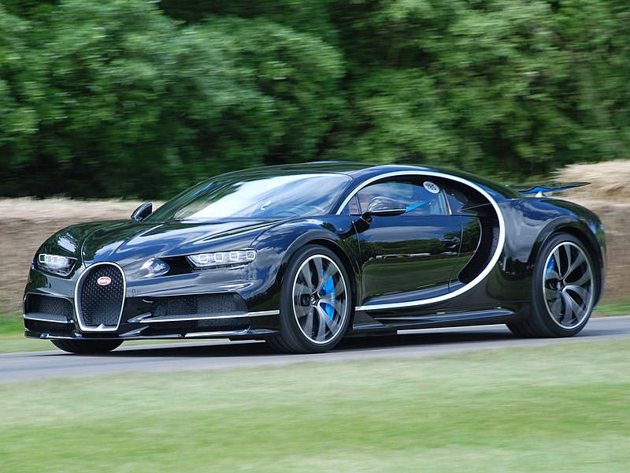

Bugatti Chiron
El Bugatti Chiron es un hiperdeportivo de lujo que combina ingeniería avanzada con un diseño impresionante. Equipado con un motor W16 de 1500 caballos de fuerza, es uno de los coches más rápidos del mundo.
✨ Deseado por su velocidad y exclusividad extrema.